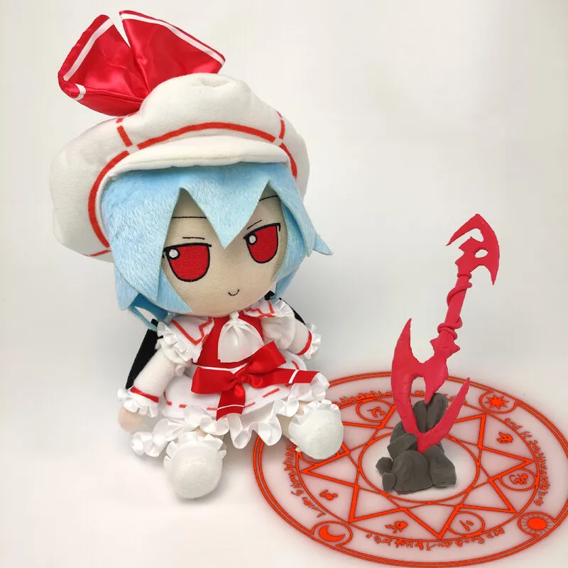
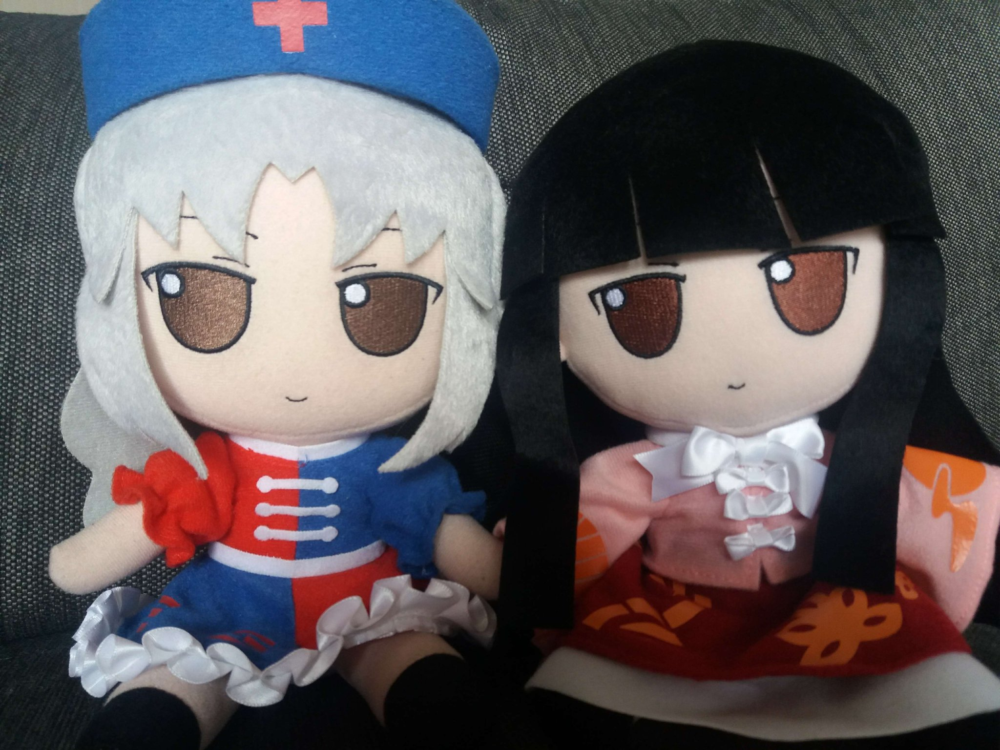
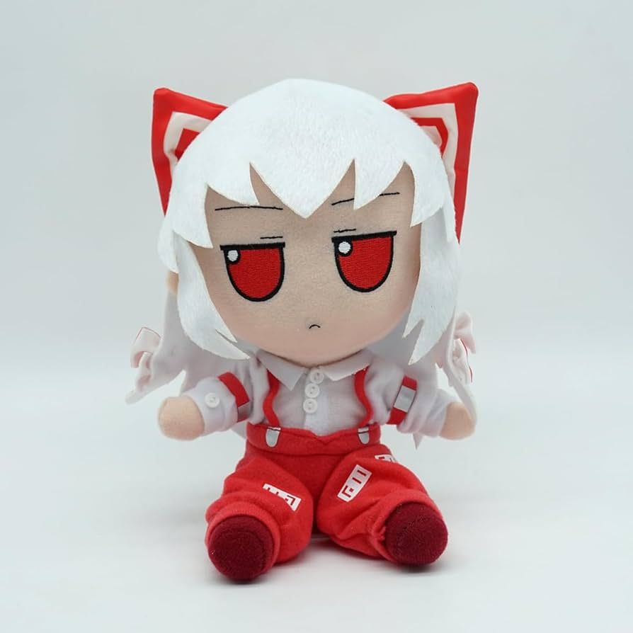

Добро пожаловать в мир Touhou Project, где мистика встречается с увлекательными приключениями и захватывающими персонажами! Великолепно воплощая дух этого волшебного мира, Fumo представляет коллекцию уникальных кукол, которые поклонники Touhou Project могут обожать и коллекционировать.
Fumo - это не просто игрушки. Это произведения искусства, созданные с любовью к миру Touhou и его персонажам. С их невероятной детализацией и высоким качеством изготовления, куклы Fumo погружают вас в волшебную атмосферу Touhou Project, позволяя принять участие в его увлекательных историях прямо из вашего дома.
Привнесите кусочек магии Touhou в свою жизнь с коллекцией Fumo. Для поклонников Touhou Project это врата в мир фантазии, где вы сможете ощутить всё величие этой удивительной вселенной.
| Неповторимый дизайн персонажей |
| Fumo предлагает вам уникальные куклы, каждая из которых воплощает дух и характер своего персонажа из Touhou Project. Сочетание выразительных лиц, ярких цветов и уникального стиля делает каждую куклу неповторимой и привлекательной. |
| Изысканная детализация |
| Каждая кукла Fumo обладает впечатляющей детализацией, отразив аутентичный внешний вид и особенности персонажей Touhou Project. Невероятные мелкие детали, такие как одежда, аксессуары и выражение лица, придают куклам особый шарм и реалистичность. |
| Качественные материалы |
| Fumo изготовлены из высококачественных материалов, обеспечивая прочность и долговечность. Мягкий плюш и качественные ткани придают куклам приятную на ощупь текстуру, а прочные швы и детали обеспечивают долговечность использования. |
| Подходят для коллекционирования и декора |
| Эти куклы не только радуют глаз, но и могут служить отличным элементом коллекции для истинных поклонников Touhou Project. Они также идеально подходят для декорирования вашего рабочего места, шкафа или комнаты, придавая им уникальный и фэнтезийный вид. |
| Прекрасный подарок для поклонников мира Touhou |
| Fumo - это отличный подарок для всех, кто любит Touhou Project. Эти куклы будут приятным сюрпризом для друзей, родственников или коллег, которые разделяют ваше увлечение миром Touhou. |
| Атрибут для юмористических видео и мем сцен |
| Fumo известно в медиа тем, что появляется в коротких роликах, нацеленных на фанатов и людей, кто любит милые игрушки. |
|  |  |  |